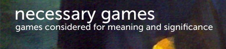
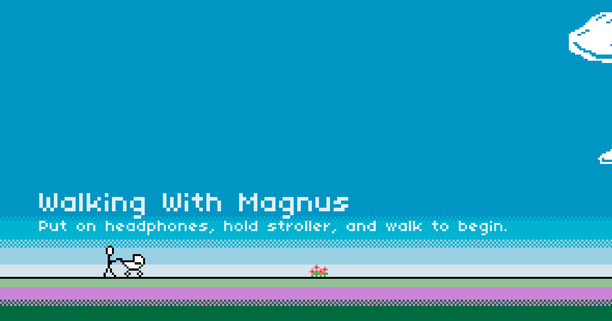
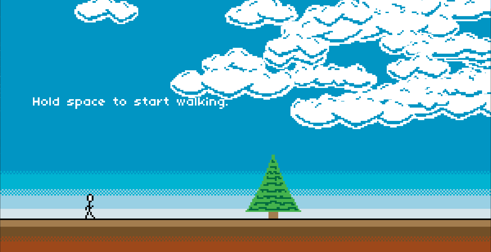

I collaborated with a developer and his studio to recreate and port several of his games from Flashpunk (which had become deprecated) to HTML5 using GameMaker Studio 2. Over the course of a year, I gained valuable experience in the full game development process, including participating in regular meetings, conducting peer reviews, and handling bug fixes. This hands-on involvement significantly deepened my understanding of both technical workflows and team collaboration in a professional setting.

This is a game poem with strong symbolic elements, built as a walking simulator with more interactive input compared to the previous title. The game emphasizes atmospheric storytelling through its scenery and sound design. I helped port it from FlashPunk to HTML5 using GameMaker Studio 2, further honing my skills in adapting legacy projects while preserving their artistic intent.
github
I worked with a partner on porting "Walk-or-Die", a unique walking simulator described by its creator as “more poem than game.” The project focused on preserving the artistic intent while adapting the game to GameMaker Studio 2. Through this experience, I gained a deeper understanding of the engine and its capabilities, especially in handling unconventional game mechanics and narrative-driven design.
github